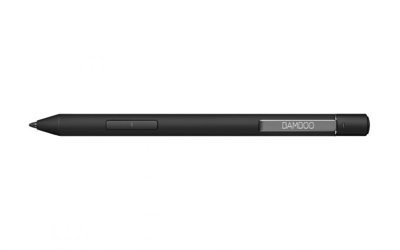

30
3
Bamboo Ink Plus, Black, stylus
Toma notas, dibuja, esboza y plasma tus ideas en Windows Ink con la misma naturalidad que al hacerlo sobre un papel. Bamboo Ink Plus es un lápiz digital diseñado para potenciar aún más tu creatividad en pantalla. Cada trazo parece auténtico gracias a su adaptación a la inclinación natural, que detecta el ángulo del lápiz respecto a la superficie de dibujo. Cada línea, punto, espiral e incluso el más ligero de los trazos aparecerá en pantalla con suma precisión y sin esfuerzo gracias a su sensibilidad al más leve tacto. El botón de Bluetooth permite conectarlo inmediatamente a Windows Ink. Luego podrás desarrollar posteriormente tus ideas con las aplicaciones preinstaladas Sketchpad y Screen Sketch, u otras aplicaciones optimizadas para el lápiz digital. Funciona con una amplia gama de dispositivos aptos para lápices, y se sincroniza automáticamente tanto con el protocolo Wacom Active ES como con el Microsoft Pen Protocol (MPP).